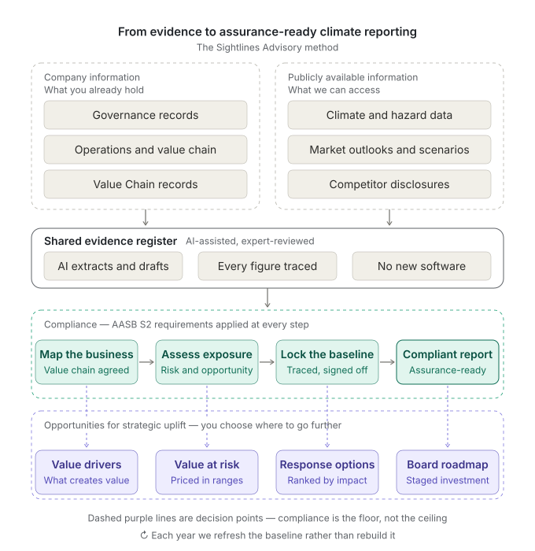
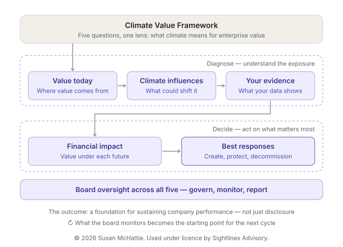

See the business
Understand how the company creates value: its business model, value drivers, assets, customers, relationships, capabilities and dependencies.

SIGHTLINES ADVISORY
Audit-ready AASB S2 climate compliance with human-led AI.
Sightlines Advisory helps companies understand how changing conditions affect the way they create, protect and grow enterprise value.
We bring senior commercial, climate value, reporting and technology expertise together with sharp, AI-enabled tools to turn evidence into insight, decisions and action.
Preparing for mandatory climate-related disclosure? Explore our Climate Disclosure AASB S2 Fast Track →
THE QUESTION WE ANSWER
Companies face a growing field of changing conditions, risks and opportunities. The challenge is rarely a shortage of information. It is understanding what matters to your business, how it affects enterprise value and what management does next.
We start with the business. We identify the risks and opportunities that matter, follow the evidence to understand their consequences for enterprise value, and turn that insight into choices about what to do next.
We bring different perspectives together to establish a clearer line of sight from change to value.
HOW WE WORK
Understand how the company creates value: its business model, value drivers, assets, customers, relationships, capabilities and dependencies.
Bring together evidence and perspectives to identify material risks and opportunities, test assumptions and understand how changing conditions could affect the enterprise.
Translate evidence into financial and enterprise value consequences for performance, assets, customers, capital and resilience.
Turn the analysis into response choices, priorities and practical management action.
Understanding before quantification. Evidence before assertion. Management judgement where it matters.
THE SIGHTLINES METHOD
We bring together what a company already knows with relevant public information, then make the evidence, assumptions and management decisions visible at every stage.

WHAT WE DELIVER
We stage the work. We offer a fast start so you can build confidence with stakeholders that disclosure requirements will be delivered efficiently.
Establish the evidence, analysis, governance and controls required for robust, auditable climate-related disclosure.
Understand how physical change, transition and opportunity flow through your business model to financial performance and enterprise value.
Turn the analysis into choices about assets, customers, operations, investment, capabilities and capital.
These are connected parts of the same problem. We can begin with an immediate disclosure requirement or work from the broader business question.
WHY SIGHTLINES
We start with how your company creates value, then examine how changing conditions affect it.
Commercial, financial, climate value and technology expertise brought together around the same business questions.
Transparent sources, explicit assumptions and a clear distinction between evidence, interpretation, uncertainty and data gaps.
Senior judgement directs the work and management remains accountable for the decisions. AI accelerates evidence discovery, analysis and synthesis.
The analysis connects to strategy, operations, investment, customers, assets and financial performance.
CLIMATE DISCLOSURE AASB S2 FAST TRACK
A focused assessment for executives and boards preparing for mandatory climate-related disclosure.
See the evidence, analysis, governance and controls you already have, know what is missing, and identify what requires management judgement.
For many Australian entities, Group 2 reporting begins for financial years starting on or after 1 July 2026. Applicability depends on the entity and relevant legislative thresholds.
Explore the Climate Disclosure AASB S2 Fast TrackTHE CLIMATE VALUE FRAMEWORK
Our climate work is underpinned by the Climate Value Framework, developed to connect climate risk and opportunity to the way a company creates enterprise value.
The Framework provides a disciplined path from business understanding and evidence through risk and opportunity, financial consequence, response and decision. It supports traceability from the question being asked to the evidence used, analysis performed and decisions that follow.

SIGHTLINES ADVISORY
Changing conditions create risk. They also change where and how value can be created. Start with the business, follow the evidence and find what matters.
Seize your advantage.
Start a conversation